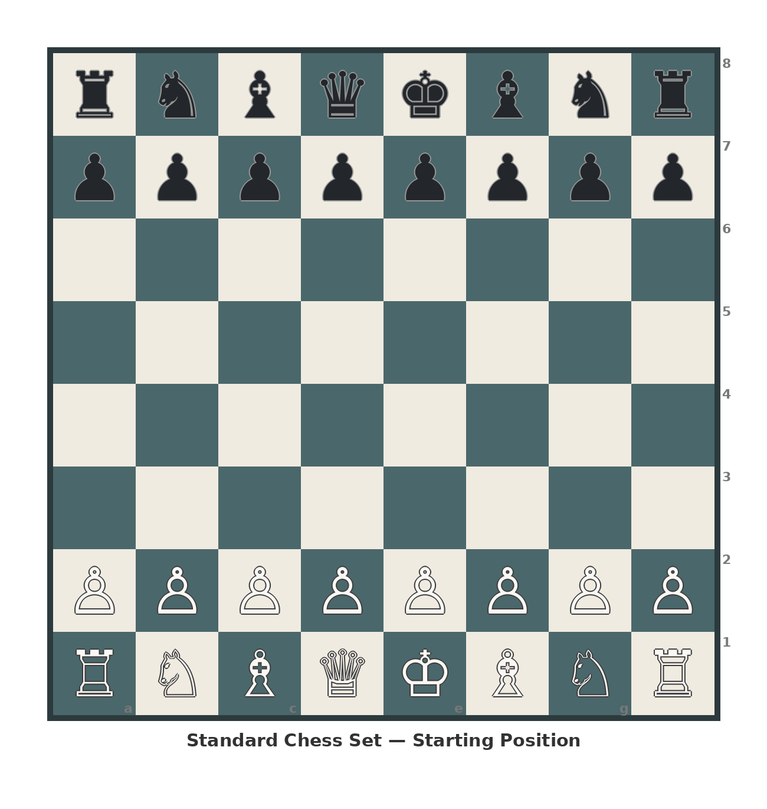

Gather these before you start:

Each player owns and shuffles their own deck. Both decks stay independent. Draw and play cards only from your own deck.
Play a card battle to determine which player gets to choose Black vs. White.